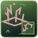

Oathbound Vanguard
+3 power, +3 armour, and +4% max health. Opens the Oathkeeper shield, smite, and bruiser branches.
RUNALIS · SKILL ART REVIEW
89 different active silhouettes and 174 individual passive and weapon-tree emblems. Active icons are shown at 48, 24 and 16 pixels. Open any active card to equip that skill in the save-free proving ground.
Twelve live combat casts, using simple review targets. Select any icon below to try a skill yourself.
Cast an oath-chain. Pull lesser foes inward; against a massive foe, advance to the anchor.
control · open to tryHold a planted stance. Frontal hits are reduced by 55%; pressure builds Conviction and retaliation.
channel · open to tryStore part of suffered damage for five seconds, then release a close Judgment shockwave.
defence · open to tryCondemn a foe for eight seconds. Three melee blows trigger a judgment strike.
control · open to tryStrike with a blessed weapon, dealing heavy close-range melee damage and building Oathkeeper pressure.
Class technique · open to tryDrive the shield forward, damaging, staggering, and knocking back enemies in front.
Class technique · open to tryLeap forward and crash down with divine force, damaging and staggering enemies near the landing point.
Class technique · open to tryRelease a close-range holy smite around the Oathkeeper. Charged casts increase radius and impact.
Class technique · open to trySanctify the ground nearby, damaging enemies over time and reducing incoming damage while you hold the zone.
Class technique · open to tryRaise a radiant shield that greatly improves block and reduces incoming damage for a short time.
Class technique · open to trySpend a large amount of Spirit to restore yourself with holy light. Powerful, expensive, and not spammable.
Class technique · open to tryPlant weapon and shield into the ground, releasing a massive divine shockwave and briefly fortifying yourself.
Class technique · open to tryTether a foe for four seconds. Separation drags light foes or advances you toward heavy anchors and exposes the target.
control · open to tryA heavy steel blade rebounds between three nearby foes, punishing Exposed targets.
damage · open to tryArm a mechanical deadfall after a short delay. A nearby hostile triggers a crushing, staggering impact.
area · open to tryFor six seconds, weapon kills against Exposed or wounded foes partially recharge your oldest gadget, up to three times.
support · open to tryVault backward from your aim while firing a steel shot at the threat. Terrain stops the vault.
mobility · open to tryA quick blade or hatchet strike for close-range emergencies. No tricks, just steel and timing.
Class technique · open to tryThrow steel daggers in the aimed direction. Reliable ranged pressure that hits harder against Exposed targets.
Class technique · open to tryPlace a mechanical trap ahead of you. It arms quickly, snaps on the first enemy, slows or roots them, and applies Exposed.
Class technique · open to tryScatter metal spikes across the ground, slowing enemies that cross them and briefly exposing them.
Class technique · open to tryThrow a handmade bomb with a short fuse. It bursts with smoke, sparks, and physical fire, exposing enemies caught in the blast.
Class technique · open to tryFire a hookline in the aimed direction and pull yourself forward. The pull stops at walls and solid terrain.
Class technique · open to tryLoose oiled arrows in a wide arc. The impacts burn through groups with practical fire and smoke.
Class technique · open to tryDrop a gray smoke burst that slows nearby enemies, disrupts pursuit, and exposes targets long enough to escape or punish.
Class technique · open to tryAim a careful arrow or crossbow shot that applies Exposed and sets up the next trap, dagger, or bomb hit.
Class technique · open to tryRapidly deploy traps, caltrops, fuses, and a finishing volley in a compact prepared area. Strong if enemies stay inside.
Class technique · open to tryHold to gather a spectral congregation. Bound spirits seek foes in your aimed region. Kills briefly swell the Host.
channel · open to tryThrow a funerary vessel. After it shatters, four bound grave wisps seek nearby foes for three seconds.
swarm · open to tryGlide through enemy bodies, leaving a spectral wake. Crossed enemies are Haunted and take stronger spirit hits.
mobility · open to tryMark a living foe. If it dies within eight seconds, its temporary echo attacks former allies.
summon · open to tryFire a fast necrotic orb toward the cursor. It damages on impact and restores a little health.
Class technique · open to tryRaise a skeletal henchman that follows you and fights nearby enemies. Commander of the Dead raises three equipped henchmen. Optional mastery morphs replace them with specters, mummies or lesser goliath knights. Use again to dismiss the group.
Class technique · open to tryCall a durable lich that keeps its distance and fires long-range necrotic bolts. Every third bolt bursts against up to three nearby enemies. Use again to dismiss it. Raise the Bound Dead remains a separate skill.
Class technique · open to tryA high-damage single-target necrotic lance that returns a chunk of health.
Class technique · open to tryDrain nearby enemies with a short necrotic pulse and convert part of the damage into health.
Class technique · open to tryAn erupting root line carries you forward. Short thorn growths remain at both ends.
mobility · open to tryThrow a seed pod that splits into four short-lived biting growths. Each bite opens a Verdant Wound.
swarm · open to tryHold a rooted stance to erupt thorn volleys along your aim and slow nearby enemies.
channel · open to tryPlant a death seed in a foe. Its death grows a temporary carnivorous flower that bites nearby enemies.
summon · open to tryLash forward with a thorny vine, damaging several enemies, slowing them, and opening Verdant Wounds.
Class technique · open to tryShoot a hooked vine that bites into a target, dealing light damage and applying a strong slow or brief root.
Class technique · open to tryGrow a thorny ground patch that slows enemies, deals modest damage over time, and spreads Verdant Wounds.
Class technique · open to tryRaise rose-headed thorn mouths from the ground after a short snap, biting clustered enemies and slowing them.
Class technique · open to trySeed a brief regeneration aura. Offensive thorn magic also refreshes a smaller Briar Bloom aura during combat.
Class technique · open to tryErupt thick roots around a target area, heavily slowing or briefly rooting enemies while adding Verdant Wounds.
Class technique · open to trySummon three fragile rose-headed thornlings that harass, distract, and spread small slows and Verdant Wounds.
Class technique · open to trySummon one durable rosemaw beast with Elder Presence and a cooldown-based Rosemaw Devour bite.
Class technique · open to tryHold a slow-moving vortex. Flow widens its reach; Soaked foes are pulled and pressured more strongly.
channel · open to tryLay a moving ground current for four seconds. It draws nearby foes toward its narrow path and applies Soaked.
control · open to tryDrive a narrow, piercing jet through aligned enemies. Soaked targets take additional pressure damage.
damage · open to tryA six-second water curtain mitigates ranged pressure, then retaliates with a small water jet.
defence · open to tryDrive a charged torrent through a narrow cone. Repeated water hits apply Soaked and make enemies vulnerable to Waverider pressure.
Class technique · open to tryWrap yourself and nearby allies in a pressure ward that absorbs flat damage from each hit. Absorption scales with charge and Level; duration gains +1 second every 10 levels.
Class technique · open to trySend a restorative current through nearby allies, healing more strongly when fully charged.
Class technique · open to tryStep through a sweeping Tideglass cut. The water edge deals extra pressure to Soaked enemies.
Class technique · open to tryRide a short current forward, leaving a slowing wake and bursting around your arrival.
Class technique · open to tryCollapse pressure around an aimed group, slowing and heavily Soaking every enemy caught inside.
Class technique · open to tryRaise a generous wellspring that restores health, stamina, and spirit to nearby allies.
Class technique · open to tryCrown the battlefield in a violent deluge, crushing enemies while granting nearby allies a powerful pressure ward.
Class technique · open to trySurge along a clear radiant path. Crossed enemies receive Halo Brand; solid geometry stops the surge.
mobility · open to tryRadiant fragments orbit for six seconds and strike close foes. Activating Dawncarver consumes them for a wider beam.
area · open to tryTelegraph a location, then strike it with a towering shaft of radiance. Branded foes suffer stronger judgment.
area · open to tryCurse a foe for eight seconds. Four radiant ability hits detonate accumulated stress.
control · open to tryFire a quick radiant bolt. Every few successful hits generate a Lumen; branded targets count faster.
Class technique · open to tryMark a target with a fractured halo. Lightbringer attacks against branded enemies build Lumens faster.
Class technique · open to tryRelease a narrow radiant line. Generate a Lumen when it hits multiple enemies or a Halo Branded target.
Class technique · open to tryRaise a short prism shield. The first absorbed hit grants one Lumen.
Class technique · open to tryChannel a 3-second steerable radiant beam with no cooldown. Drains Spirit while active; mastery reduces the cost. Available Lumens are consumed to increase width, reach, and damage.
Class technique · open to trySpend all Lumens to call down a radiant verdict. More Lumens increase radius and damage.
Class technique · open to trySpend all Lumens to shield yourself and nearby allies with a wingless halo barrier.
Class technique · open to trySignature: instantly fill Lumens and briefly empower Lumen generation and radiant spenders.
Class technique · open to tryHold a slow red-black conduit. Sustained contact branches lightning to nearby foes; each second also costs one health.
channel · open to tryDisplace a short distance along passable ground. The abandoned tear ruptures after a delay.
mobility · open to tryConnect two unstable rifts for five seconds. The angular line damages enemies crossing it.
area · open to tryBlack fragments orbit for six seconds and fire into nearby threats. Positioning determines their reach.
area · open to tryTeleport forward and detonate in red-black lightning, damaging nearby enemies on arrival.
Class technique · open to trySummons your full horror group at once. Press again to dismiss every survivor; the cooldown begins only when the group is gone.
Class technique · open to tryCollapse a small star around you, slowing enemies and striking them with branching red-black lightning.
Class technique · open to tryOpen a red-black rift at the aimed point, damaging and pulling clustered enemies.
Class technique · open to tryPassive emblems show a large benefit symbol, a discipline badge and doctrine details. Passive skills do not gain invented attacks or casting animations.
+3 power, +3 armour, and +4% max health. Opens the Oathkeeper shield, smite, and bruiser branches.
+5% ability damage and +6% wounded damage. Oath Strike stays slow but hits harder.
+8% damage against wounded enemies and +6% holy damage after committing to heavy melee pressure.
+12 stamina, +8% blocking movement speed, and +8% Bastion Bash stagger.
+8 armour. Blocking a clean hit builds stronger Conviction for the next smite, shield, or heal.
+10% holy damage, wider Judgment Smite, and one additional Judgment Smite use charge.
Max Health: +3%. A permanent passive benefit while this discipline is available.
Block Cost Reduction: +4%. A permanent passive benefit while this discipline is available.
Armour: +3. A permanent passive benefit while this discipline is available.
Stamina: +8. Power: +2. A permanent passive benefit while this discipline is available.
Throwing Daggers gain an additional use charge and hit Exposed enemies harder.
+4 power, +4 armour, and stronger hits against enemies made Exposed by traps, smoke, or marked shots.
Bear Trap and caltrops bite harder. Exposed lasts slightly longer after an enemy triggers a tool.
Stamina: +6. A permanent passive benefit while this discipline is available.
Move Speed: +2%. A permanent passive benefit while this discipline is available.
Crit Chance: +2%. A permanent passive benefit while this discipline is available.
Exposed Damage: +6%. Trap Damage: +4%. A permanent passive benefit while this discipline is available.
+10 maximum Spirit and +2 power. Opens the shared rites before the Commander or Lichbound doctrine.
+5% lifesteal from combat damage and steadier forbidden rites before choosing a Gravecaller doctrine.
+12% single-target damage, a second Blood Lance use, and stronger execute pressure for the Lichbound scythe-caster path.
+8% summon damage and +8% summon health. Your bound henchmen can take specter, mummy or lesser goliath knight mastery forms in Abilities. Opens Commander of the Dead or Lichbound Reaper.
Raise the Bound Dead now calls three of its selected form: skeletal henchmen, specters, mummies or lesser goliath knights. Each keeps its Vanguard, Reaver or Marksman equipment bonuses. Locks Lichbound Reaper.
+6% lifesteal, +10 maximum Spirit, and another Soul Siphon charge to keep the Gravecaller alive while the squad fights.
Capstone: bound dead, curses, lifesteal, and scythe rites answer one deliberate command. Blood Lance and Soul Siphon recharge faster.
Spirit: +6. A permanent passive benefit while this discipline is available.
Summon Health: +5%. A permanent passive benefit while this discipline is available.
Necrotic Damage: +4%. A permanent passive benefit while this discipline is available.
Summon Damage: +5%. Max Health: +3%. A permanent passive benefit while this discipline is available.
+6 Spirit and stronger Briar Bloom healing. Opens Thorn Lash and Living Roots branches.
Thorn abilities wound enemies harder, adding more slow pressure and slightly stronger Briar Bloom.
Whichever companion path you chose becomes better at holding enemies in Verdant Wounds and grants another Living Briar use.
Capstone: Verdant Wounds, Briar Bloom, and your chosen rose-beast path all improve while Root Prison and Living Briar recharge faster.

Max Health: +3%. A permanent passive benefit while this discipline is available.
Armour: +2. A permanent passive benefit while this discipline is available.
Healing Power: +3. A permanent passive benefit while this discipline is available.
Nature Damage: +4%. Summon Health: +5%. A permanent passive benefit while this discipline is available.
+6% hellfire damage and +3 power. The pact marks you, but cannot own you.
+8% ability damage and wider Hellfire Brand eruptions.
Temper infernal heat into armour and stamina instead of feeding its first violent answer.
+10% damage against elites and bosses. You learned what cages feel like.
+10% max health and +6% fire damage, but the rite still resists healing.
Gain stronger hellfire and elite damage while refusing every master.
Trade raw fury for a steadier body and more reliable ability pressure.
Either infernal discipline opens a stronger, wider Hellfire Brand.
Capstone: infernal power belongs to you alone. Greatly empowers bloodline and ability damage.
Max Health: +3%. A permanent passive benefit while this discipline is available.
Armour: +2. A permanent passive benefit while this discipline is available.
Hellfire Damage: +4%. A permanent passive benefit while this discipline is available.
Stamina: +8. Wounded Damage: +4%. A permanent passive benefit while this discipline is available.
+4 armour and +6% holy damage. The Light answers, but does not command.
+15% defense buff duration and stronger Seraphic Aegis shielding.
Shape the first radiant answer into a precise mortal weapon instead of a sheltering halo.
+9% single-target damage and +8% holy damage after you refuse obedience.
+8% max health and +5 healing power. A lantern, not a sun.
Strengthen healing and protective wards without surrendering your will.
Turn radiant burden outward through stronger holy and wounded-target damage.
Either interpretation of the light leads to a stronger defensive presence.
Capstone: carry radiant power without becoming its instrument.
Max Health: +3%. A permanent passive benefit while this discipline is available.
Healing Power: +2. A permanent passive benefit while this discipline is available.
Armour: +3. A permanent passive benefit while this discipline is available.
Holy Damage: +4%. Spirit: +4. A permanent passive benefit while this discipline is available.
+5% lifesteal and +3 power. The chalice taught hunger; you kept the name.
+5% movement speed and +8% crit damage for predatory skirmishing.
Hold the first hunger still, hardening body and will before the hunt begins.
Crimson Feast heals harder and single-target strikes bite deeper.
+12% wounded enemy damage and +6% crit chance. Finish fights before the hunger does.
Restraint hardens the body and makes stolen life last longer.
Embrace speed and execution without surrendering your name.
Either answer to hunger deepens your deathless endurance.
Capstone: become a relentless duelist sustained by every decisive strike.
Stamina: +6. A permanent passive benefit while this discipline is available.
Move Speed: +2%. A permanent passive benefit while this discipline is available.
Lifesteal: +1%. A permanent passive benefit while this discipline is available.
Wounded Damage: +5%. Max Health: +3%. A permanent passive benefit while this discipline is available.
+4 maximum Spirit and +4% ability damage. Opens the pressure and shelter branches.
Water abilities hit harder and Soaked enemies become more vulnerable.
Strengthen defensive wards and support healing.
Either final current strengthens Flow, pressure, and party protection.
Spirit: +6. A permanent passive benefit while this discipline is available.
Dodge Cost Reduction: +4%. A permanent passive benefit while this discipline is available.
Healing Power: +3. A permanent passive benefit while this discipline is available.
Water Damage: +5%. Spirit: +4. A permanent passive benefit while this discipline is available.
+4 maximum Spirit and +5% Lightbringer radiant ability damage. Opens the Halo and Prism branches.
Halo Brand lasts longer and branded targets feed Lumens more reliably.
Generating Lumens while full grants a short Overbright state that improves the next Dawncarver.
Spirit: +6. A permanent passive benefit while this discipline is available.
Lumen Generation: +4%. A permanent passive benefit while this discipline is available.
Armour: +3. A permanent passive benefit while this discipline is available.
Holy Damage: +4%. Lightbringer Shield: +4%. A permanent passive benefit while this discipline is available.
+4 power and +10 maximum Spirit. Opens forbidden mobility, rift, and horror branches.
Voidstep Burst reaches farther, hits harder, and leaves a sharper lightning scar.
Your eldritch summon evolves into larger, stronger forms as Spirit grows.
Summon several smaller horrors instead of evolving one ancient horror.
+12% ability damage, stronger rifts, and your beam becomes nastier against elites and bosses.
Turn the violence of release into a steadier rhythm with an additional Voidstep Burst use.
Accept harsher instability for stronger boss pressure and an additional Red Maw Rift use.
Capstone: either final method teaches the conduit to rupture imposed order. Voidstep Burst recharges faster.
Spirit: +6. A permanent passive benefit while this discipline is available.
Max Health: +3%. A permanent passive benefit while this discipline is available.
Spirit Damage: +4%. A permanent passive benefit while this discipline is available.
Boss Damage: +5%. Spirit: +4. A permanent passive benefit while this discipline is available.
Measured Edge develops the sword mastery path.
Duelist Rhythm develops the sword mastery path.
Guarded Cuts develops the sword mastery path.
Sword Mastery Discipline develops the sword mastery path.
Execution Line develops the sword mastery path.
Cleaving Form develops the sword mastery path.
Sword Mastery Mastery develops the sword mastery path.
Capstone for Sword Mastery. Defines the final shape of this weapon style.
Stamina: +6. A permanent passive benefit while this discipline is available.
Power: +2. A permanent passive benefit while this discipline is available.
Block Cost Reduction: +4%. A permanent passive benefit while this discipline is available.
Crit Damage: +5%. Wounded Damage: +4%. A permanent passive benefit while this discipline is available.
String Discipline develops the bow mastery path.
Patient Aim develops the bow mastery path.
Moving Shot develops the bow mastery path.
Bow Mastery Discipline develops the bow mastery path.
Killing Mark develops the bow mastery path.
Broad Volley develops the bow mastery path.
Bow Mastery Mastery develops the bow mastery path.
Capstone for Bow Mastery. Defines the final shape of this weapon style.
Stamina: +6. A permanent passive benefit while this discipline is available.
Attack Speed: +2%. A permanent passive benefit while this discipline is available.
Crit Chance: +2%. A permanent passive benefit while this discipline is available.
Crit Damage: +5%. Power: +2. A permanent passive benefit while this discipline is available.
Living Focus develops the staff mastery path.
Rooted Channel develops the staff mastery path.
Warding Reach develops the staff mastery path.
Staff Mastery Discipline develops the staff mastery path.
Thorn Current develops the staff mastery path.
Sheltering Pulse develops the staff mastery path.
Staff Mastery Mastery develops the staff mastery path.
Capstone for Staff Mastery. Defines the final shape of this weapon style.
Spirit: +6. A permanent passive benefit while this discipline is available.
Armour: +2. A permanent passive benefit while this discipline is available.
Nature Damage: +4%. A permanent passive benefit while this discipline is available.
Healing Power: +3. Spirit: +4. A permanent passive benefit while this discipline is available.
Harvest Stance develops the scythe mastery path.
Grave Arc develops the scythe mastery path.
Hungry Edge develops the scythe mastery path.
Scythe Mastery Discipline develops the scythe mastery path.
Wide Reaping develops the scythe mastery path.
Vital Severance develops the scythe mastery path.
Scythe Mastery Mastery develops the scythe mastery path.
Capstone for Scythe Mastery. Defines the final shape of this weapon style.
Stamina: +6. A permanent passive benefit while this discipline is available.
Power: +2. A permanent passive benefit while this discipline is available.
Stagger Power: +4%. A permanent passive benefit while this discipline is available.
Necrotic Damage: +4%. Lifesteal: +1%. A permanent passive benefit while this discipline is available.
Focus Initiate develops the spirit focus mastery path.
Steady Hand develops the spirit focus mastery path.
Efficient Channel develops the spirit focus mastery path.
Spirit Focus Mastery Discipline develops the spirit focus mastery path.
Prism Shot develops the spirit focus mastery path.
Impact Pulse develops the spirit focus mastery path.
Spirit Focus Mastery Mastery develops the spirit focus mastery path.
Capstone for Spirit Focus Mastery. Defines the final shape of this weapon style.
Spirit: +6. A permanent passive benefit while this discipline is available.
Focus Bolt Cost Reduction: +4%. A permanent passive benefit while this discipline is available.
Focus Bolt Speed: +5%. A permanent passive benefit while this discipline is available.
Focus Bolt Damage: +5%. Focus Impact: +4%. A permanent passive benefit while this discipline is available.
Red Conduction develops the conduit mastery path.
Controlled Scar develops the conduit mastery path.
Violent Pulse develops the conduit mastery path.
Conduit Mastery Discipline develops the conduit mastery path.
Mark Discipline develops the conduit mastery path.
Rupture Current develops the conduit mastery path.
Conduit Mastery Mastery develops the conduit mastery path.
Capstone for Conduit Mastery. Defines the final shape of this weapon style.
Spirit: +6. A permanent passive benefit while this discipline is available.
Armour: +2. A permanent passive benefit while this discipline is available.
Spirit Damage: +4%. A permanent passive benefit while this discipline is available.
Elite Damage: +5%. Spirit: +4. A permanent passive benefit while this discipline is available.